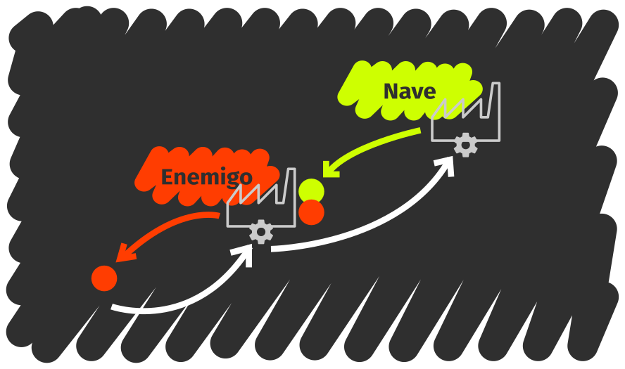

El modelo de datos de JavaScript
Conocer un lenguaje de programación se traduce básicamente en conocer su sintaxis, modelo de datos, modelo de ejecución y estilo.
Durante esta lección, codificarás en JavaScript lo aprendido en la lección anterior.
No todos los lenguajes permiten una transcripción 1 a 1 de los conceptos que recogemos en el modelo. Por ejemplo, JavaScript no tiene un mecanismo para crear tipos nuevos, pero tiene otros mecanismos que permiten implementar una funcionalidad similar.
Experimentando con JavaScript
Vas a experimentar con JavaScript, así que necesitarás una forma rápida de inspeccionar expresiones y obtener feedback de lo que estás haciendo. La mejor forma es utilizar la consola de Node. Por ejemplo:
$ node --use_strict
La opción --use_strict activa el modo estricto de JavaScript, que simplifica
algunos aspectos del lenguaje. El modo estricto recorta algunas características,
pero los beneficios son mayores que las pérdidas.
Ahora puedes probar a introducir algunas expresiones:
> 40 + 2
42
> var point = { x: 1, y: 1 };
undefined
> point
{ x: 1, y: 1 }
> point.x
1
Para limpiar la pantalla presiona ctrl+l. Para salir de Node, presiona
ctrl+c dos veces seguidas. Si escribiendo una expresión Node parece no
responder, presiona ctrl+c una vez para cancelar la expresión.
Si no quieres lidiar con la consola de Node, siempre puedes escribir un
programa y usar console.log() para mostrar expresiones por pantalla.
// en el fichero prueba.js
console.log(40 + 2);
var point = { x: 1, y: 1 };
console.log(point);
console.log('Coordenada X:', point.x);
Ahora ejecuta el programa con Node:
$ node prueba.js
42
{ x: 1, y: 1 }
Coordenada X: 1
Esta lección asume que utilizarás una única sesión de la consola de Node, a menos que se indique lo contrario.
Para la mayoría de los ejemplos, puedes mantener la misma sesión abierta, pero si te encuentras con algo inesperado, antes de nada prueba a reiniciar la consola. Para reiniciar la consola tienes que salir y volver a entrar.
Lo mejor es que se tenga este texto abierto en una ventana (o impreso), y la consola de Node en otra.
Tipos primitivos
Se llaman tipos primitivos a aquellos que vienen con el lenguaje y que permiten la creación de nuevos tipos más complejos. En JavaScript, los tipos primitivos son: booleanos, números, cadenas (strings), objetos y funciones.
// En los comentarios hay más valores posibles para cada uno de los tipos.
var bool = true; // false
var number = 1234.5; // 42, -Infinity, +Infinity
var text = 'I want to be a pirate!'; // "I want to be a pirate"
var object = {}; // [], null
var code = function () { return 42; };
Los puedes reconocer porque responden de manera distinta al operador typeof.
Observa cómo los tipos son cadenas de texto:
typeof true;
typeof 1234.5;
typeof 'I want to be a pirate!';
typeof {};
typeof function () { return 42; };
En JavaScript se puede declarar una variable y no asignarle ningún valor. En
este caso, el tipo de la variable será 'undefined'.
var x;
typeof x;
x = 5; // tan pronto como le demos un valor, el tipo dejará de ser undefined.
typeof x;
Objetos en JavaScript
De entre todos los tipos, vamos a prestar especial atención a aquel cuyos
valores permiten la composición con otros valores. Estos son los de tipo 'object' (objeto).
En JavaScript, los objetos son colecciones de valores etiquetados. Por ejemplo,
si queremos representar el punto (10, 15) del plano XY, podemos etiquetar el
valor en el eje X con la cadena 'x' y el valor en el eje Y con la cadena
'y'.
var point = { 'x': 10, 'y': 15 };
Cada par etiqueta y valor se llama propiedad del objeto. No es algo estricto, pero cuando se habla de las propiedades de un objeto, se suele referir a los valores; mientras que para hablar de las etiquetas se suele decir nombre de la propiedad.
Si los nombres de las propiedades se escriben siguiendo las reglas de formación de identificadores en JavaScript, las comillas no son necesarias y podemos ahorrárnoslas.
var point = { x: 10, y: 10 }; // mucho más conveniente.
Este es el caso más frecuente, el recomendado, y el que usaremos a los largo de este material; pero conviene saber que, por debajo, el nombre de la propiedad es una cadena.
Para acceder a las propiedades de un objeto, usamos los corchetes [ ] con el
nombre de la propiedad entre estos:
point['x'];
point['y'];
De nuevo, si seguimos las reglas de formación de identificadores, podemos usar la notación de punto para acceder a la propiedad, mucho más rápida de escribir:
point.x;
point.y;
Para cambiar el valor de una propiedad se utiliza el operador de asignación:
point.x = 0;
point.y = 0;
point['x'] = 0;
point['y'] = 0;
Si se accede a una propiedad que no existe, obtendras el valor undefined:
var label = point.label; // será undefined. Compruébalo con typeof.
En cualquier momento podemos crear propiedades nuevas asignándoles algo.
point.label = 'origin';
point;
Arrays
Las listas o arrays son colecciones de datos ordenados.
Por ejemplo, la lista de comandos de un menú en un videojuego:
var menu = ['Attack', 'Defense', 'Inventory'];
En este tipo de objetos, el orden importa. Para acceder a los distintos valores
se utiliza el índice del elemento en la lista, entre corchetes. Los índices
comienzan en 0, y no en 1.
menu[0];
menu[1];
menu[2];
Se puede consultar la longitud de un array accediendo a la propiedad length.
menu.length;
Se puede añadir un elemento al final del array llamando al método push:
menu.push('Magic');
También se puede quitar un elemento por el final usando el método pop:
menu.pop();
Se puede alterar un array (insertar o borrar elementos), en cualquier lugar,
usando el método splice:
// Inspecciona la lista tras cada operación.
menu = ['Attack', 'Defense', 'Inventory'];
menu.splice(2, 0, 'Magic'); // añade Magic antes de Inventory.
menu.splice(2, 2, 'Ench. Inventory'); // reemplaza Magic and Inventory with Ench. Inventory.
menu.splice(0, 0, 'Wait'); // añade Wait al principio de la lista.
Como en el caso de los objetos, podemos cambiar cualquier valor en cualquier momento usando el operador de asignación.
menu[0] = 'Special'; // reemplaza Wait con Special
También como en el caso de los objetos, podemos acceder a un valor que no existe y recuperarlo o asignarlo en cualquier momento.
menu;
menu.length;
var item = menu[10];
typeof item; // será undefined.
menu[10] = 'Secret';
menu;
menu.length;
Si asignamos a un índice por encima de la longitud actual, se extenderá el array hasta ese índice.
Distinguir entre objetos y arrays
Arrays y objetos tienen tipo 'object', así que se ha de usar el método
Array.isArray()
para distinguirlos.
var obj = {}; // el objeto vacío es tan válido como cualquier otro.
var arr = []; // una lista sin elementos, como te puedes imaginar.
typeof obj; // será object.
typeof arr; // será object.
Array.isArray(obj); // será false.
Array.isArray(arr); // será true.
null
Existe un último valor para el tipo objeto, que es null. Este valor representa
la ausencia de objeto y se suele utilizar para:
En funciones en las que se pregunta por un objeto, indicar que no se ha encontrado tal objeto.
En relaciones de composición, indicar que el objeto compuesto ya no necesita al objeto componente.
Por ejemplo, en un RPG, podemos preguntar por el siguiente enemigo vivo para comprobar si debemos continuar la batalla:
function getNextAliveEnemy() {
var nextEnemy;
if (aliveEnemies.length > 0) {
nextEnemy = aliveEnemies[0];
}
else {
nextEnemy = null;
}
return nextEnemy;
}
O bien, supón la ficha de personaje de un héroe:
var hero = { sword: null, shield: null };
hero.sword = { attack: 20, magic: 5 }; // coge una espada.
hero.sword = null; // suelta la espada.
Composición de objetos
Objetos y arrays permiten cualquier composición de objetos. Es decir, sus valores pueden ser otros objetos y arrays, números, cadenas o funciones.
El siguiente ejemplo muestra una posible ficha de personaje de un RPG:
var hero = {
name: 'Link',
life: 100,
weapon: { kind: 'sword', power: 20, magicPower: 5 },
defense: { kind: 'shield', power: 5, magicPower: 0 },
// Inventario por slots. Dos slots vacíos y un último con 5 pociones.
inventory: [
{ item: null, count: 0},
{ item: null, count: 0},
{ item: { kind: 'potion', power: 15 }, count: 5}
]
};
Algunas propiedades:
hero.name; // el nombre del héroe
hero.weapon.kind; // el tipo de arma
hero.inventory[0]; // el primer slot del inventario
hero.inventory[0].item; // qué hay en el primer slot del inventario
hero.inventory[2].item.power; // el poder del item del 3r slot del inventario
Identidad de los objetos
En JavaScript, el operador de igualdad es === (el triple igual). Esto permite
comparar dos objetos y decidir si son iguales. También existe el operador de
desigualdad !== que compara dos objetos y decide si no son iguales.
Para los tipos 'bool', 'string', 'number' y 'undefined', dos valores son
iguales si tienen la misma forma:
// Todas estas comparaciones son verdaderas.
"Hola" === "Hola";
"Hola" !== "hola";
true === true;
123 === 123.0;
123 !== "123";
123 === 122 + 1; // primero se resuelve la expresión, luego se compara.
undefined === undefined;
Para el tipo object, dos objetos son iguales sólo si se refieren al mismo
objeto:
({} !== {}); // da igual la forma, esto son dos objetos distintos.
({} !== []);
[] !== []; // igual que antes.
[1, 2, 3] !== [1, 2, 3]; // la forma da igual, los objetos son distintos.
null === null; // pero con null funciona porque sólo hay un valor null.
var obj = {};
var sameObj = obj;
var another = {};
sameObj === obj; // funciona porque ambos nombres se refieren al mismo objeto.
sameObj !== another; // insisto, distintos, pese a la forma.
Objetos y paso de mensajes
Los objetos de JavaScript y el poder usar código como un valor más, permiten codificar los conceptos de objeto y paso de mensajes de la programación orientada a objetos.
Codificando el estado
Con lo que se ha visto hasta ahora deberías tener el conocimiento suficiente para codificar el estado. El conjunto de atributos del objeto en el modelo orientado a objetos se traduce en el conjunto de propiedades de los objetos JavaScript.
En el ejemplo de Space Invaders, el estado de los enemigos formado por:

Se puede codificar mediante:
var enemy = {
graphic: 'specie01.png',
currentDirection: 'right',
position: { x: 10, y: 10 },
score: 40
};
La primera limitación en JavsScript es que no se puede restringir el acceso a las propiedades de un objeto (es decir, no hay propiedaes privadas). Así, nada nos impide poder modificar la posición directamente.
enemy.position.x = 100; // perfectamente válido.
Lo único que se puede hacer es desaconsejar al usuario de ese código que utilice
ciertas propiedades. Una práctica muy común en JavaScript es añadir un guión
bajo _ a los atributos que consideramos que son privados:
var enemy = {
_graphic: 'specie01.png',
_currentDirection: 'right',
_position: { x: 10, y: 10 },
_score: 40
};
Pero, insistimos, esto es una convención y se puede seguir accediendo a los atributos que tengan este guión bajo:
enemy._position.x = 100; // perfectamente válido también.
Codificando la API
Las acciones que forman la API de un objeto, los métodos, pueden implementarse como funciones en propiedades de un objeto.

var enemy = {
_graphic: 'specie01.png',
_currentDirection: 'right',
_position: { x: 10, y: 10 },
_score: 40,
moveLeft: function () { console.log('Going left!'); },
moveRight: function () { console.log('Going right!'); },
advance: function () { console.log('Marching forward!'); },
shoot: function () { console.log('PICHIUM!'); } // (es un láser)
};
Enviar un mensaje a un objeto consiste sencillamente acceder a la propiedad del destinatario, que será una función, y llamarla.
enemy.shoot(); // primero accedemos con punto, luego llamamos con ().
enemy.moveLeft();
enemy.moveLeft();
enemy.advance();
enemy['shoot'](); // es lo mismo, acceder con corchetes y llamar con ().
Cualquier función puede actuar como método. Para que actúe como un método tan sólo es necesario llamarla desde la propiedad de un objeto. Y, como cualquier propiedad de un objeto, podemos cambiarla en cualquier momento:
enemy.shoot(); // PICHIUM!
enemy.shoot = function () { console.log('PAÑUM!'); };
enemy.shoot(); // PAÑUM!
Ahora bien, observa el siguiente comportamiento:
enemy; // fíjate en la posición.
enemy.moveLeft();
enemy; // fíjate en la posición otra vez.
Obviamente, echando un vistazo a lo que hace moveLeft, no podríamos decir
que cambia el estado del objeto destinatario del mensaje. ¿Cómo podríamos
solucionarlo?
Como cualquier función puede actuar como método, hace falta una forma de
referirse al destinatario del mensaje, si existe. Cuando se usa como un
método, el destinatario se guarda siempre en la variable this.
Gracias a ella, podemos implementar los métodos de movimiento:
enemy.moveLeft = function () { this._position.x -= 2; };
enemy.moveRight = function () { this._position.x += 2; };
enemy.advance = function () { this._position.y += 2; };
Prueba el mismo experimento de antes y observa cómo efectivamente alteramos el estado del objeto.
enemy; // fíjate en la posición.
enemy.moveLeft();
enemy; // fíjate en la posición otra vez.
El valor the this
El valor de this es uno de los aspectos más controvertidos de JavaScript.
En otros lenguajes, métodos y funciones son cosas distintas y un método
siempre tiene asociado un –y sólo un- objeto, así que this nunca cambia.
Pero en JavaScript, this depende de cómo se llame a la función: si se
llama como si fuera una función, o si se llama como si fuera un método.
Considera la siguiente función:
function inspect() {
// sólo inspecciona this
console.log('Tipo:', typeof this);
console.log('Valor:', this);
}
Y prueba lo siguiente:
// Piensa qué puede valer this antes de probar cada ejemplo.
var ship1 = { name: 'T-Fighter', method: inspect };
var ship2 = { name: 'X-Wing', method: inspect };
ship1.method();
ship2.method();
inspect();
En el último caso, el valor de this es undefined porque la función no se
está usando como un método, por lo que no hay destinatario.
En JavaScript podemos hacer que cualquier objeto sea this en cualquier
función. Para ello usaremos
apply
en una función.
var onlyNameShip = { name: 'Death Star' };
inspect.apply(onlyNameShip); // hace que this valga onlyNameShip en inspect.
A this
se le conoce también como objeto de contexto, y en este material usaremos
este término de vez en cuando.
Consideraciones adicionales
Nombres y valores
Una variable es un nombre. Para el programa, quitando algunas excepciones, los nombres no tienen significado.
Un valor no es un nombre. De hecho, sólo las funciones pueden tener nombre con el fin de poder implementar recursividad y un par de cosas más.
Así que no es lo mismo el nombre uno que el valor 1, y por supuesto, no
es obligatoria ninguna relación coherente entre el nombre y el valor.
var uno = 2; // para el programa tiene sentido, quizás para el programador no.
En general, hablando de booleanos, cadenas y números, decimos que los nombres guardan valores, mientras que si hablamos de objetos y funciones decimos que los nombres apuntan a objetos o funciones o son referencias a objetos o funciones.
Funciones, referencias a funciones y llamadas a funciones
Hay dos formas de definir una función. Una es usando la declaración de
función function:
// Introduce una variable factorial que apunta a la función factorial.
function factorial(number) {
if (number === 0) {
return 1;
}
return number * factorial(number - 1);
} // no hace falta un ';' en este caso.
En este caso, el nombre de la función (antes de los paréntesis) es obligatorio. Dar nombre a una función tiene dos implicaciones:
Permite implementar llamadas recursivas como la del ejemplo.
Crea un nombre
factorialpara referirnos a esa función.
La otra forma es usar una expression de función. Esta se parece más a como crearíamos otros valores, como números o cadenas:
// Introduce una variable recursiveFunction que apunta a OTRA funcion factorial.
var recursiveFunction = function factorial(number) {
if (number === 0) {
return 1;
}
return number * factorial(number - 1);
}; // ahora sí hace falta ';', como en cualquier asignación.
En este último caso, hay dos nombres. Uno es el nombre de la función
factorial, que existe para poder referirnos a ella dentro del cuerpo de la
función. El otro es la variable recursiveFunction que referencia a la función.
La misma función puede referirse desde múltiples variables o, dicho de otra manera, tener muchos nombres:
var a = recursiveFunction;
var b = recursiveFunction;
a === b; // es cierto, se refieren a la misma función.
a.name; // el nombre de la función no tiene que ver con el de la variable.
b.name; // lo mismo.
recursiveFunction !== factorial;
Tampoco podemos confundir la referencia a la función factorial y la
llamada a la misma función, por ejemplo: factorial(10).
Con la primera forma nos referimos al objeto que encapsula el código que hay que ejecutar. No requiere parámetros porque no se quiere ejecutar el código sino solamente referirse a la función.
Con la segunda, pedimos a la función que se ejecute y por tanto habrá que aportar todos los parámetros necesarios.
En JavaScript todo es un objeto
Si, como definición alternativa, consideramos como objeto aquello que puede responder a un mensaje, resulta que en JavaScript todo es un objeto.
Observa los siguiente ejemplos:
true.toString();
3.1415.toFixed(2);
'I want to be a pirate!'.split(' ');
({}).hasOwnProperty('x');
(function (parameter) { return parameter; }).length;
Tipos y constructores de objetos
Hemos comentado que JavaScript no permite modelar tipos nuevos y que hace falta "dar un rodeo". Esta es una de las principales diferencias con otros lenguajes orientados a objetos.
Lo que se debe hacer es saltarse el concepto de tipo para abordar directamente el de constructor.

Vamos a crear dos funciones constructoras: una para puntos y otra para disparos.
function newPoint(x, y) {
var obj = {};
obj.x = x;
obj.y = y;
return obj;
}
function newShot(position, velocity) {
var obj = {};
obj._position = position;
obj._velocity = velocity;
obj.advance = function () {
this._position.y += this._velocity;
};
return obj;
}
La forma de las funciones constructoras es muy similar: crear un objeto vacío, establecer las propiedades del objeto y devolver el nuevo objeto.
Ahora podríamos crear disparos con algo así:
// Velocidad positiva para que se mueva hacia abajo.
var enemyShot = newShot(newPoint(15, 15), 2);
// Velocidad negativa para que se mueva hacia arriba.
var allyShot = newShot(newPoint(15, 585), -2);
enemyShot !== allyShot;
Reaprovechando funcionalidad
El problema con esta aproximación es que estamos creando funciones distintas para comportamientos idénticos: una función por objeto.
var s1 = newShot(newPoint(15, 15), 2);
var s2 = newShot(newPoint(15, 15), 2);
var s3 = newShot(newPoint(15, 15), 2);
s1.advance !== s2.advance;
s2.advance !== s3.advance;
s3.advance !== s1.advance;
Esto es altamente ineficiente, dado que cada función ocupa un espacio distinto en memoria.
Realmente no son necesarias tantas funciones, sino una solamente actuando sobre distintos objetos.
Así que es mejor crear un objeto que contenga únicamente la API:
var shotAPI = {
advance: function () {
this._position.y += this._velocity;
}
};
Y usarlo en la creación del objeto para compartir los métodos de la API:
function newShot(position, velocity) {
var obj = {};
obj._position = position;
obj._velocity = velocity;
obj.advance = shotAPI.advance;
return obj;
}
Ahora todas las instancias comparten la misma función, pero cada función actúa
sobre el objeto correspondiente gracias al valor de this:
var s1 = newShot(newPoint(15, 15), 2);
var s2 = newShot(newPoint(15, 15), 2);
var s3 = newShot(newPoint(15, 15), 2);
s1.advance === s2.advance; // ahora SÍ son iguales.
s2.advance === s3.advance;
s3.advance === s1.advance;
Para hacer todavía más fuerte la asociación entre el constructor y la API,
vamos a realizar una pequeña modificación: crear el objeto con
la API como una propiedad de la función constructora, quedando así todo
agrupado en el mismo sitio (la función newShot).
function newShot(position, velocity) {
var obj = {};
obj._position = position;
obj._velocity = velocity;
obj.advance = newShot.api.advance;
return obj;
}
// Una función es un objeto, así que le podemos añadir una propiedad.
newShot.api = {
advance: function () {
this._position.y += this._velocity;
}
};
La cadena de prototipos
JavaScript posee una característica muy representativa y única del lenguaje: la cadena de prototipos.
Puedes experimentar con ella en Object Playground, una excelente herramienta que te ayudará a visualizarla.
La idea no es complicada: la cadena de prototipos es una lista de búsqueda para las propiedades. Cada elemento de la cadena es prototipo del objeto anterior.
Cuando accedes a una propiedad de un objeto, esta propiedad se busca en el objeto y, si no se encuentra, se busca en el prototipo del objeto, y así sucesivamente hasta alcanzar la propiedad o el final de esta cadena.
Por ejemplo:
obj1 obj2 obj3
{ a: 1, b: 2, c: 3} --> { d: 4, e: 5 } --> { f: 6 }
obj1.c -------↑ ↑ ↑
obj1.d -------------------| |
obj1.f --------------------------------------|
obj1.z ------------------------------------------------X
Crear esta jerarquía en JavaScript requiere el uso de Object.create():
// La cadena se monta de atrás hacia adelante.
var obj3 = { f: 6 };
// Encadenamos obj2 a obj3
var obj2 = Object.create(obj3);
obj2.d = 4;
obj2.e = 5;
// Encadenamos obj1 a obj2
var obj1 = Object.create(obj2);
obj1.a = 1;
obj1.b = 2;
obj1.c = 3;
obj1.c;
obj1.d;
obj1.f;
obj1.z; // undefined
El método Object.create() crea un nuevo objeto vacío (como {}) cuyo
prototipo es el objeto pasado como parámetro.
Se puede usar el método hasOwnProperty
para determinar si una propiedad pertenece a un objeto sin atravesar la cadena
de prototipos:
obj1.hasOwnProperty('c'); // true
obj1.hasOwnProperty('d'); // false
obj1.hasOwnProperty('f'); // false
obj1.hasOwnProperty('z'); // false
obj2.hasOwnProperty('c'); // false
obj2.hasOwnProperty('d'); // true
obj2.hasOwnProperty('f'); // false
obj2.hasOwnProperty('z'); // false
obj3.hasOwnProperty('c'); // false
obj3.hasOwnProperty('d'); // false
obj3.hasOwnProperty('f'); // true
obj3.hasOwnProperty('z'); // false
Se puede usar el método Object.getPrototypeOf()
para obtener el prototipo de un objeto:
Object.getPrototypeOf(obj1) === obj2;
Object.getPrototypeOf(obj2) === obj3;
Object.getPrototypeOf(obj3) === Object.prototype;
Object.getPrototypeOf(Object.prototype) === null;
Constructores y cadenas de prototipos
Los prototipos se prestan a ser el lugar ideal para contener la API, que es el comportamiento común de todos los objetos de un tipo.
var obj = newShot() newShot.api
{ _position: { x: 10, y: 10 }, _velocity: 2 } --> { advance: function ... };
obj._position.y ------↑ ↑
obj.advance ----------------------------------------|
obj.goBack ------------------------------------------------------------------X
Para crear este enlace, modificaremos nuestro constructor de la siguiente forma:
function newShot(position, velocity) {
// Con esto la API es el prototipo del objeto.
var obj = Object.create(newShot.api);
obj._position = position;
obj._velocity = velocity;
return obj;
}
newShot.api = {
advance: function () {
this._position.y += this._velocity;
}
};
Prueba ahora a crear un nuevo disparo:
var shot = newShot({x: 0, y: 0}, 2);
shot; // al inspeccionar shot sólo se muestran las propiedades del objeto.
shot.advance; // pero advance existe en su prototipo.
shot.hasOwnProperty('advance'); // false
Object.getPrototypeOf(shot).hasOwnProperty('advance'); // true
Si hacemos esto con todos los constructores, pronto encontraremos un patrón:
Crear un objeto para contener la API.
Implementar la API como propiedades de este objeto.
En el constructor, hacer que este objeto sea el prototipo de un nuevo objeto.
Establecer las propiedades del nuevo objeto con el estado.
Devolver el nuevo objeto.
Sólo los pasos 2 y 4 involucran diferencias de un constructor a otro, todo lo demás es exactamente igual. Tanto es así, que JavaScript lo tiene en cuenta y viene con los mecanismos para automatizar los pasos 1, 3 y 5.
Primero, JavaScript permite que cualquier función pueda usarse como
constructor. Por eso, cada vez que escribimos una función, JavaScript crea una
propiedad de la función llamada prototype, que es un
objeto con una única propiedad constructor que apunta a la función.
function anyFunction() {}
anyFunction.prototype;
anyFunction.prototype.constructor === anyFunction;
Esto automatiza el paso 1: ya no es necesario el objeto api que preparábamos
nosotros manualmente. La propiedad prototype es equivalente a la propiedad
api.
Ahora, al llamar a la función con el operador new delante, se crea un nuevo
objeto cuyo prototipo es precisamente la propiedad prototype de la función:
var obj = new anyFunction();
var anotherObj = new anyFunction();
// Los objetos son distintos.
obj !== anotherObj;
// Pero sus prototipos son iguales.
Object.getPrototypeOf(obj) === Object.getPrototypeOf(anotherObj);
// Y además son la propiedad prototype de la función.
Object.getPrototypeOf(obj) === anyFunction.prototype;
Con esto se automatiza el paso 3: ya no es necesario llamar a Object.create()
para establecer la cadena de prototipos entre objeto y API (lo conseguimos
automáticamente al utilizar el operador new).
Finalmente, cuando se llama con new, la función recibe como objeto de
contexto (el this) el elemento que está siendo creado, lo que nos
permite establecer sus atributos.
function Hero(name) {
this.name = name;
this.sword = null;
this.shield = null;
}
var hero = new Hero('Link');
hero;
Si la función no devuelve nada, el resultado del operador new será el
nuevo objeto. Esto automatiza el paso 5: no es necesario devolver el
nuevo objeto, esta devolución se hace implícita al utilizar new.
Observa como quedaría el constructor de un objeto punto:
function Point(x, y) {
this.x = x;
this.y = y;
}
Y el del disparo:
function Shot(position, velocity) {
this._position = position;
this._velocity = velocity;
}
// El prototipo ya existe, pero le añadimos el método advance()
Shot.prototype.advance = function () {
this._position.y += this._velocity;
};
Ahora crear los objetos será cuestión de usar new. Emplearemos además nuestro
nuevo tipo punto (Point) para pasar la posición al disparo:
var enemyShot = new Shot(new Point(15, 15), 2);
var allyShot = new Shot(new Point(15, 585), -2);
enemyShot !== allyShot;
Herencia
Ya hemos visto cómo crear objetos con atributos y cómo hacerlo eficazmente, usando constructores y la cadena de prototipos.
Veremos ahora cómo crear una relación de herencia. Recordemos el ejemplo de los enemigos y la nave protagonista de la lección anterior:

Necesitaremos nuestros puntos y disparos:
function Point(x, y) {
this.x = x;
this.y = y;
}
function Shot(position, velocity) {
this._position = position;
this._velocity = velocity;
}
Shot.prototype.advance = function () {
this._position.y += this._velocity;
};
El constructor y los métodos de los enemigos podrían ser:
function Enemy(graphic, position, score) {
this._graphic = graphic;
this._currentDirection = 'right';
this._position = position;
this._score = score;
}
Enemy.prototype.moveLeft = function () { this._position.x -= 2; };
Enemy.prototype.moveRight = function () { this._position.x += 2; };
Enemy.prototype.advance = function () { this._position.y += 2; };
Enemy.prototype.shoot = function () {
var firePosition = new Position(this._position.x, this._position.y + 10);
var shot = new Shot(firePosition, 2);
return shot;
};
Y aquí la implementación de la nave aliada:
function Ally(position) {
this._graphic = 'ally.png';
this._position = position;
}
Ally.prototype.moveLeft = function () { this._position.x -= 2; };
Ally.prototype.moveRight = function () { this._position.x += 2; };
Ally.prototype.shoot = function () {
var firePosition = new Position(this._position.x, this._position.y - 10);
var shot = new Shot(firePosition, -2);
return shot;
};
Ahora podemos generalizar y pensar en un constructor que capture las propiedades comunes de ambos tipos:
function Ship(graphic, position) {
this._graphic = graphic;
this._position = position;
}
Ship.prototype.moveLeft = function () { this._position.x -= 2; };
Ship.prototype.moveRight = function () { this._position.x += 2; };
En este caso, probablemente sea mejor no incluir el método de disparar
shoot, ya que unas naves disparan hacia arriba y otras hacia abajo. Tampoco
incluiremos advance, puesto que es exclusivo de los enemigos y no de la nave
aliada.

Recuerda que ahora los constructores de la nave aliada y los enemigos pedirán primero al constructor de nave que cree una nave y luego la personalizarán.
function Enemy(graphic, position, score) {
Ship.apply(this, [graphic, position]);
this._currentDirection = 'right';
this._score = score;
}
function Ally(position) {
Ship.apply(this, ['ally.png', position]);
}
Con apply
se puede ejecutar una función indicando cuál será su objeto de contexto y sus
parámetros.
Con la configuración anterior, las nuevas instancias de enemigos y aliados
pasarán primero por el constructor de Ship, que establecerá los atributos
comunes y luego estas instancias serán modificados cada una por el constructor
pertinente para convertirse en enemigos o en aliados.
En cuanto a la API, lo ideal sería contar con una cadena de prototipos de la siguiente manera:
Los atributos del enemigo (o del aliado) están en la propia instancia.
La API específica del tipo
EnemyorAllyestán en la propiedadprototypedel constructor de ese tipo.La API común a los tipos
EnemyyAllyestá en la propiedadprototypedel constructorShip.
var enemy = new Enemy() Enemy.prototype Ship.prototype
{ _position: ..., _score: ... } --> { advance: ... } --> { moveLeft: ... }
enemy._score -----↑ ↑ ↑
enemy.advance ------------------------| |
enemy.moveLeft --------------------------------------------|
Como ocurría con el ejemplo en la sección anterior, hay que crear la cadena
desde atrás hacia adelante. El enlace entre las instancias y los
constructores nos lo proporciona JavaScript al utilizar new, pero el enlace
entre la propiedad prototype de Enemy y la de Ship hay que que
establecerlo manualmente.
Prueba lo siguiente:
// Inspecciona el prototype de Enemy.
Enemy.prototype;
// Enlaza ambas propiedades prototype.
Enemy.prototype = Object.create(Ship.prototype);
// Inspecciona la propiedad prototype otra vez y busca diferencias.
Enemy.prototype;
// Corrige la propiedad constructor.
Enemy.prototype.constructor = Enemy;
// Añade el método específico del tipo Enemy.
Enemy.prototype.advance = function () {
this._position.y += 2;
};
// Otro método específico.
Enemy.prototype.shoot = function () {
var firePosition = new Point(this._position.x, this._position.y + 10);
var shot = new Shot(firePosition, 2);
return shot;
};
Y para el tipo Ally:
// Lo mismo para el aliado.
Ally.prototype = Object.create(Ship.prototype);
Ally.prototype.constructor = Ally;
Ally.prototype.shoot = function () {
var firePosition = new Point(this._position.x, this._position.y - 10);
var shot = new Shot(firePosition, -2);
return shot;
};
Ahora sí, ya podemos crear un enemigo y un aliado usando sus constructores:
var enemy = new Enemy('enemy1.png', new Point(10, 10), 40);
var ally = new Ally(new Point(10, 590));
Object.getPrototypeOf(ally) === Ally.prototype;
Object.getPrototypeOf(enemy) === Enemy.prototype;
Ally.prototype !== Enemy.prototype;
Object.getPrototypeOf(Ally.prototype) === Object.getPrototypeOf(Enemy.prototype);
Object.getPrototypeOf(Ally.prototype) === Ship.prototype;
También podemos comprobar dónde está cada propiedad:
enemy.hasOwnProperty('_score');
enemy.hasOwnProperty('advance');
enemy.hasOwnProperty('moveLeft');
Enemy.prototype.hasOwnProperty('_score');
Enemy.prototype.hasOwnProperty('advance');
Enemy.prototype.hasOwnProperty('moveLeft');
Ship.prototype.hasOwnProperty('_score');
Ship.prototype.hasOwnProperty('advance');
Ship.prototype.hasOwnProperty('moveLeft');
Polimorfismo
Las relaciones de herencia que acabamos de establecer nos permiten decir que un
enemigo es una instancia del tipo Enemy, pero también lo es del tipo Ship.
Una misma instancia tiene múltiples formas gracias a la herencia. En
programación orientada a objetos a esto se lo llama polimorfismo.
Alternativamente, podemos decir que un enemigo es una instancia de Enemy
porque tiene la API de Enemy, o que es una instancia de Ship porque tiene
la API de Ship. Esto es equivalente a decir que las propiedades prototype
de Enemy y Ship están en la cadena de prototipos del objeto.
El operador instanceof devuelve verdadero si la propiedad prototype de la
función a la derecha del operador está en la cadena de prototipos del objeto a
la izquierda del operador.
enemy instanceof Enemy; // Enemy.prototype es el primer eslabón.
enemy instanceof Ship; // Ship.prototype es el segundo.
enemy instanceof Object; // Object.prototype, el tercero.
enemy instanceof Ally; // Ally.prototype no está en la cadena.
En lo referente al estado, resulta conveniente saber qué constructor ha
construido el objeto para conocer de un vistazo los atributos que contendrá el
mismo. Esto es equivalente a determinar cuál es la función cuya propiedad
prototype es el primer eslabón de la cadena de prototipos.
Dado que los objetos prototipo vienen de serie con una propiedad constructor,
que por defecto apunta a la función que posee al objeto prototipo, basta con
acceder a la propiedad constructor a través de la instancia.
enemy.constructor;
enemy.constructor === Enemy; // fue construido por Enemy, no por Ship.
enemy.constructor !== Ship; // es cierto que Ship fue utilizado, pero nada más.
Duck typing
In other words, don't check whether it IS-a duck: check whether it QUACKS-like-a duck, WALKS-like-a duck, etc, etc, depending on exactly what subset of duck-like behaviour you need to play your language-games with.
Alex Martelli sobre polimorfismo
La cita se refiere a que más que comprobar si algo es una instancia de un tipo, se debería comprobar si tiene la funcionalidad que es necesaria.
JavaScript es tan dinámico que el operador instanceof y la propiedad
constructor sólo tienen sentido si se siguen las convenciones que acabamos de ver.
Nada nos impide borrar la propiedad constructor de un prototipo o
sobreescribirla en un objeto determinado. De hecho, en las nuevas versiones de
JavaScript, el prototipo de un objeto puede cambiar después de que el objeto
haya sido construido.